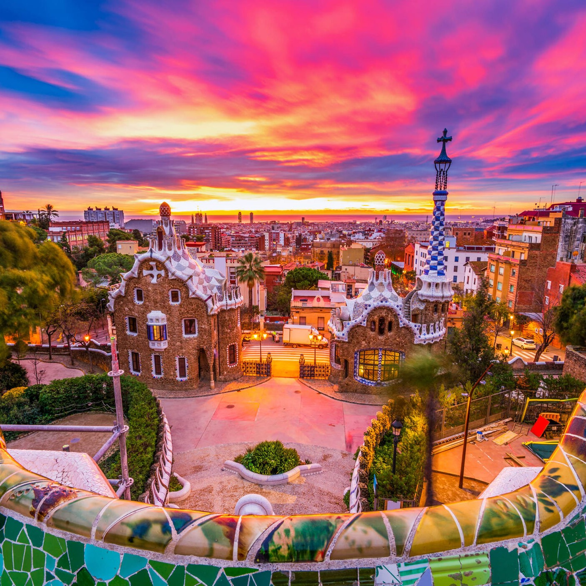
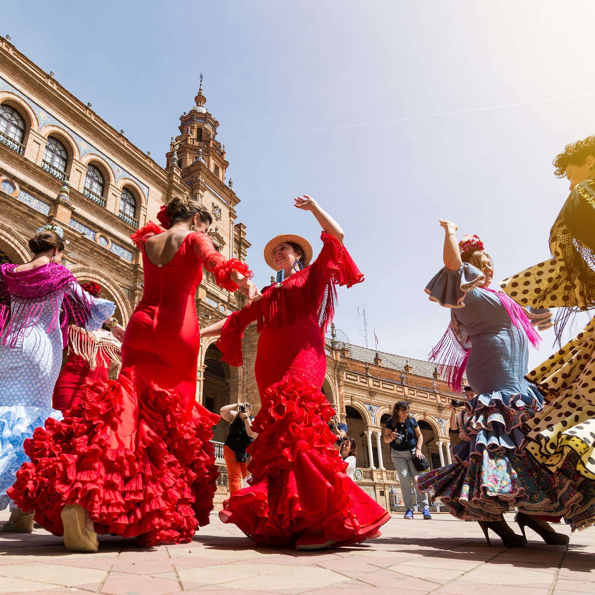

Spain
España: A Tapestry of Culture, History, and Flamenco Rhythms
Spain, or España, as the locals affectionately call it, is a country where tradition and modernity dance together in perfect harmony. From the traditional Flamenco performances to the avant-garde architecture of Barcelona, Spain is a place that celebrates its rich history while embracing the future. My journey through Spain was a quest to delve into its soul, savor its culinary treasures, and immerse myself in the passionate spirit of its people.
 My Spanish adventure began in Barcelona, a city that effortlessly blends the old and the new. I strolled down the bustling La Rambla, where street performers and flower stalls added to the vibrant atmosphere. My first stop was the awe-inspiring Sagrada Família, a basilica designed by the visionary architect Antoni Gaudí. Exploring its intricate facades and towering spires was a journey into the mind of a creative genius. One evening, I attended a traditional Flamenco show in a dimly lit tablao. The fiery performances of the dancers, the haunting melodies of the guitar, and the passionate singing left me spellbound. It was a glimpse into the soul of Spain's artistic expression.
Next on my itinerary was Madrid, the capital of Spain. The city's cultural treasures awaited me at the Prado Museum, where I marveled at works by Velázquez, Goya, and El Greco. The Royal Palace, with its opulent rooms and grandeur, gave me a taste of Spain's royal history. One sunny morning, I joined a group of Madrileños in El Retiro Park, where families gathered, couples rowed on the boating lake, and street musicians filled the air with melodies. It was a delightful way to experience the city's everyday life and the warmth of its people.
Seville, often considered the birthplace of Flamenco, was my next destination. Here, I wandered through the historic neighborhoods of Santa Cruz and Triana, where narrow streets led to hidden plazas adorned with orange trees. The Real Alcázar, a royal palace complex, was a masterpiece of Mudejar architecture that transported me to another era. One evening, I attended a live Flamenco performance in a traditional tablao in Triana. The raw emotion and rhythmic footwork of the dancers, accompanied by the haunting sounds of the cante and guitar, left me with a deep appreciation for this passionate art form.
 From Seville, I traveled to Granada, a city known for its Moorish heritage. The Alhambra, a palace and fortress complex, was a masterpiece of Islamic architecture. Wandering through its intricate Nasrid Palaces and Generalife Gardens, I was enchanted by the interplay of light, water, and ornate decoration. One day, I hiked up to the Mirador de San Nicolás, a viewpoint that offered a postcard-perfect view of the Alhambra against the backdrop of the Sierra Nevada mountains. As the sun set over this magical city, I understood why Granada has been a source of inspiration for artists and poets for centuries.
Valencia welcomed me with its futuristic City of Arts and Sciences complex, a testament to modern architecture and innovation. I explored the Oceanografic, the largest aquarium in Europe, where I came face to face with sharks, dolphins, and colorful marine life. A visit to the Central Market, a bustling gastronomic paradise, allowed me to sample regional specialties like paella and horchata. Valencia's blend of modernity and culinary tradition was a true delight for the senses.
Córdoba, with its mesmerizing Mezquita-Catedral, was a journey back in time to the period of Al-Andalus. The Mezquita's forest of striped arches, illuminated by the soft glow of sunlight filtering through, was a breathtaking sight. I joined a guided tour of the Mezquita that provided insights into its history and significance. It was a humbling experience to stand in a place that had witnessed centuries of cultural exchange and transformation.
My Spanish odyssey concluded in San Sebastián, a coastal gem known for its culinary excellence. I embarked on a pintxos tour, sampling small, delectable bites in the city's charming bars. One evening, I dined at a Michelin-starred restaurant, savoring dishes that were culinary works of art. San Sebastián's culinary scene was a grand finale to my journey through Spain, a country where every meal is a celebration of flavors.
As I bid farewell to Spain, I carried with me memories of passionate Flamenco performances, awe-inspiring architecture, and the warmth of the Spanish people. Spain had revealed its soul to me, and I hoped that my travelogue would inspire others to explore this land of fiestas and traditions. Thank you for joining me on this adventure through España, a country that has a piece of my heart. Until our next voyage, adiós, and may your travels be filled with the same spirit of discovery and wonder that defines Spain.